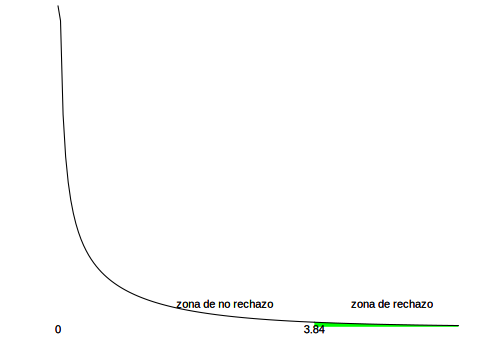
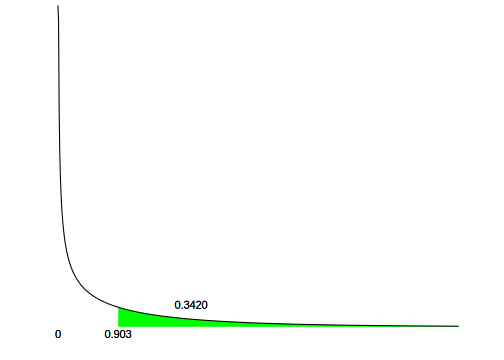

Capítulo 13 Cuando los supuestos no se cumplen
N.B. En este capítulo no nos detendremos en detalles de los procedimientos, solo las condiciones de aplicación de cada uno y, en el último apartado, el modo de reproducir los ejemplos en R.
Las condiciones que se han pedido hasta este punto para los procedimientos vistos, son exigentes. Por ejemplo, en las pruebas t debemos suponer que la variable tiene distribución normal en la población92. El Teorema Central del Límite nos dice que si las muestras son lo suficientemente grandes, la distribución muestral tiende a ser normal, por lo que puede eliminarse el supuesto de normalidad en la población si las muestras tienen suficiente tamaño, pero a menudo no es posible contar con muestras grandes. Todas las pruebas que hemos visto hasta este momento hacen supuestos acerca de la población, que son condiciones que debe cumplir la distribución de las variables bajo análisis en la población; estos supuestos a veces se cumplen y otras no. Los resultados que se obtengan de esas pruebas dependen del cumplimiento de esas condiciones. En algunos casos es posible poner a prueba la veracidad de esas exigencias, para ver si se cumplen, en otros casos, solo es posible “suponer” que es así. Por esa razón los resultados pueden ser aproximados o directamente incorrectos, si hay violaciones graves a sus condiciones de aplicación.
Además, los cálculos hechos en las pruebas mencionadas, requieren un nivel de medición alto, para poder calcular medias y varianzas. Hemos resuelto parcialmente el problema cuando, al tratar con variables nominales, usamos la proporción de casos en alguna categoría. Sin embargo no hemos resuelto aún el problema de analizar relaciones entre variables cualitativas, a las que no puede calcularse la media ni la varianza, pero que a menudo aparecen en nuestros análisis. Es el mismo caso con el coeficiente de Pearson, su cálculo requiere que se calculen medias y varianzas, lo que no puede hacerse si las variables no son métricas.
Estos problemas son muy frecuentes en investigación social: pocos casos, variables que no son métricas, sin certeza sobre la normalidad de las distribuciones paramétricas. Para ellos existe un conjunto de pruebas llamadas pruebas no paramétricas. Por oposición a ellas, todas las pruebas presentadas hasta aquí son pruebas paramétricas, que quiere decir que especifican ciertas condiciones que deben cumplir (o que puede suponerse que cumplan) los parámetros de la población de la que se extrae la muestra.
| Son pruebas no paramétricas las pruebas de hipótesis que no especifican condiciones sobre los parámetros de la población de la que proviene la muestra. |
La limitación de las pruebas no paramétricas respecto de las paramétricas, es que tienen, a igual nivel de significación e igual tamaño de muestra, menor potencia. Eso significa que, para obtener la misma potencia en una prueba no paramétrica que en una paramétrica, es necesario usar más casos.
Si el problema es el nivel de medición de las variables —que en la mayoría de los casos no es métrico—, puede resolverse apelando a una prueba no paramétrica y lograr resultados de la misma calidad, aunque a un mayor costo por la mayor cantidad de casos necesarios.
Si el problema es el tamaño de la muestra, es decir, si tenemos muy pocos casos observados y no puede suponerse distribución normal en la población, entonces no hay alternativa y debe usarse una prueba no paramétrica.
En este capítulo desarrollaremos tres pruebas no paramétricas basadas en el puntaje ji cuadrado y dos alternativas a las pruebas t para muestras independientes y apareadas. Puede consultarse el manual de Siegel (1957) para una presentación muy completa, aunque no actualizada a procedimientos informáticos, .
13.0.1 Las pruebas ji cuadrado (o chi cuadrado)
Ya hemos usado el puntaje ji cuadrado para derivar medidas de la asociación entre dos variables nominales (V de Cramer, C de Pearson) y luego como un modelo especial de probabilidades. Ahora relacionaremos esos dos usos del puntaje ji cuadrado, en primer lugar para analizar la eventual independencia entre dos variables (prueba de independencia de atributos), luego para evaluar si una distribución se ajusta a un modelo predicho (prueba de bondad de ajuste) y finalmente para comparar la tendencia central entre variables de nivel ordinal (prueba de la mediana).
13.0.1.1 Prueba de independencia de atributos
El puntaje ji cuadrado \((\chi^{2})\) es una medida de la distancia que hay entre una distribución de frecuencias bivariada observada y la correspondiente distribución de frecuencias esperadas. Estas frecuencias esperadas son las que se esperarían observar si las variables fueran independientes. Así, cuanto más alejadas se encuentren las frecuencias observadas de las esperadas, tanto más grande será el puntaje \(\chi^{2}\) y más alejadas de la independencia estarán las variables que se analizan. El hecho de estar alejadas de la independencia implica que existe alguna asociación entre ellas. El valor mínimo de este puntaje es cero, que solo podría alcanzarse si todas las frecuencias observadas coincidieran con las esperadas y sería el caso de una independencia perfecta; una situación muy improbable de hallar en la realidad. Pero el puntaje \(\chi^{2}\) carece de un valor máximo, puede ser indefinidamente grande, dependiendo no solo de lo alejadas que estén las frecuencias observadas de las esperadas, sino también de la dimensión de la tabla y de la cantidad de casos.
Como las frecuencias observadas que están en la tabla bivariada provienen de una muestra, necesitamos poder generalizar el resultado que hallemos a la población de referencia. Es decir que ahora, en el contexto de la inferencia, nos preguntamos ¿Cómo debería ser de grande el puntaje \(\chi^{2}\) encontrado para que consideremos que las variables se alejan lo suficiente de la independencia y en consecuencia, se pueda decir que la asociación es significativa? Por la redacción de la pregunta puede verse que tratamos con una prueba de hipótesis, nos estamos preguntando ¿A partir de qué valor podemos considerar que \(\chi^{2}\) es significativo? La respuesta dependerá del valor que asuma \(\chi^{2}\) (que está influido por el tamaño de la muestra) y de la dimensión de la tabla. Para formular las hipótesis de esta prueba, recordemos que la \(H_0\) es aquella que indica no-diferencia, el no-cambio, es la hipótesis “conservadora”. Por el contrario, la hipótesis alternativa, \(H_1\) presenta una diferencia en algún sentido. En este problema, como vamos a tratar acerca de relaciones entre variables, la \(H_0\) indicará que no hay relación o, lo que es lo mismo, que las variables son independientes.
Ejemplo 1 (datos ficticios) se trata analizar la posible relación entre el resultado del primer parcial de Psicoestadística (aprobado – no aprobado) y el turno en que fue realizado. Se construye una muestra con 180 estudiantes seleccionada entre quienes hicieron el primer parcial en los últimos cinco años. La siguiente es la tabla de distribución de frecuencias observadas.
| Mañana | Tarde | |
|---|---|---|
| Aprobado | 60 | 30 |
| No aprobado | 30 | 10 |
| Total | 90 | 40 |
Para el análisis de la independencia se calculan las frecuencias esperadas93:
| Mañana | Tarde | |
|---|---|---|
| Aprobado | 62 | 28 |
| No aprobado | 28 | 12 |
| Total | 90 | 40 |
Las frecuencias esperadas conducen al puntaje94 \(\chi^{2}\), que en este caso es \(\chi^{2} = 0.903\). En el interés por generalizar a toda la población, se trata de alcanzar una conclusión acerca de la independencia o no de las dos variables, que no esté limitada a estos 180 casos, sino que sea general. No debemos olvidar que los datos disponibles son muestrales y, por el modo en que se seleccionan los casos de la muestra, dependen del azar.
Nos preguntamos: ¿el valor hallado para el puntaje \(\chi^{2} = 0.903\), puede explicarse por azar, o representa un distanciamiento suficientemente grande como para atribuirlo a una relación entre las variables en la población?
Queremos entonces decidir si lo que hemos observado para este grupo de estudiantes (la muestra de quienes cursaron en los últimos cinco años, por ejemplo) es general; es decir, si vale para estudiantes que no participaron de la muestra.
Por eso, la hipótesis nula de la prueba será:
\(H_0\): El resultado del parcial es independiente del turno en que se realiza95
Que equivale a afirmar que no hay relación entre el turno y el resultado.
Su contrapartida, la \(H_1\) dirá que:
\(H_1\): Existe relación entre el turno en el que se realiza el parcial y el resultado que se obtiene.
La pregunta será entonces si la evidencia hallada a partir de nuestros datos es suficiente para rechazar \(H_0\) y concluir que las variables están relacionadas o si, por el contrario, deberemos seguir sosteniendo que las variables no están relacionadas.
La variable aleatoria \(\chi^{2}\) tiene una distribución de probabilidad asimétrica y su forma depende de los grados de libertad. Estos últimos, para tablas de doble entrada dependen del número de filas y de columnas que tenga la tabla, según:
\[gl = ( f - 1)*( c - 1)\]
Donde \(gl\) son los grados de libertad, \(f\) es el número de filas de la tabla y \(c\) el número de columnas. Entonces conocemos el puntaje \(\chi^{2}\) y su distribución de probabilidad, con lo que puede decidirse si se trata de un valor extremo (muy poco probable si \(H_0\) fuera cierta) o bien de un valor esperable. En el primer caso rechazaremos \(H_0\) y concluiremos que hay relación entre el turno en que se hace el parcial y el resultado que se obtiene. En el segundo caso, aceptaremos \(H_0\) y diremos que no hay evidencia para descartar la independencia, o que no hay pruebas para sostener que las variables estén relacionadas. Rechazaremos \(H_0\) si el valor \(\chi^{2}\) encontrado es grande, porque eso es sinónimo de un gran alejamiento de nuestros datos respecto de la independencia. En razón de ello, ésta será siempre una prueba unilateral derecha: se rechaza para valores que excedan cierto límite.
El procedimiento para hacer la prueba puede ser el tradicional, que consiste en fijar de antemano el nivel de significación \((\alpha)\), luego determinar el (único) punto crítico y comparar si el valor observado de \(\chi^{2}\) excede ese punto crítico; si es así se rechaza \(H_0\). O también puede usarse el valor p asociado al puntaje \(\chi^{2}\) observado, y si esa probabilidad es menor al nivel de significación, se rechaza \(H_0\).
En este ejemplo, los grados de libertad son:
\[gl = (f - 1)*(c - 1) = (2 - 1)*(2 - 1) = 1*1 = 1\]
Se fija un nivel de significación \(\alpha = 0.05\) y se encuentra que el punto crítico que corresponde para esa área (superior) y esos grados de libertad bajo la curva de la distribución \(\chi^{2}\). El resultado es:
## [1] 3.841459Se lo llama \(\chi^{2}_{c}\) (chi cuadrado crítico). La representación gráfica de la zona de rechazo de \(H_0\) es entonces:
Gráfico 1: Ubicación del punto crítico que deja un 5% de área superior en una distribución \(\chi^{2}\) con 2 grados de libertad.

De acuerdo a este gráfico, la región de rechazo de \(H_0\) es la que se encuentra a la derecha de 3.84, formada por todos los valores de \(\chi^{2}\) que superen a 3.84. Los datos dieron un puntaje \(\chi_{obs}^{2} = 0.903\), que no pertenece a la zona de rechazo de \(H_0\), por lo que no se rechaza \(H_0\) y se concluye que no hay relación entre las variables; o bien que no hay evidencia suficiente para descartar la independencia entre el resultado del parcial y el turno en que éste se realiza.
Si se prefiere usar el valor de probabilidad (valor p) para tomar la decisión y dar mayor claridad a los resultados, entonces, como en las pruebas paramétricas, se informa la probabilidad de hallar un valor de \(\chi^{2}\) como el observado o más extremo que él. En esta prueba (de independencia de atributos), “más extremo” siempre quiere decir “mayor que”, porque es una prueba unilateral derecha. Buscamos entonces la probabilidad que tiene la variable \(\chi^{2}\) con un grado de libertad, de asumir un valor igual o mayor al que hemos observado, es decir:
\[P(\chi^{2}{\geq \chi}_{obs}^{2}) = P(\chi^{2} \geq 0.903)\]
Que es:
## [1] 0.3419786Lo leemos diciendo que, si las dos variables fueran independientes, la probabilidad de hallar un puntaje \(\chi^{2}\) como el observado o más extremo que él es de 0.3420. Dado que es una probabilidad alta (sea a un nivel de significación del 0.05 o de 0.10), consideramos a éste como un resultado altamente probable, de ser cierto que las variables son independientes, por lo que no constituye evidencia para rechazar \(H_0\).
La representación gráfica de esta probabilidad es el área sombreada, a la derecha del valor \(\chi^2_{obs}=0.903\):

13.0.1.2 Pruebas de bondad de ajuste
El cálculo del puntaje \(\chi^{2}\) ofrece la posibilidad de hacer comparaciones entre frecuencias observadas (reales, provenientes de la recolección de datos) y frecuencias esperadas bajo diferentes hipótesis. En la prueba anterior, las esperadas lo han sido bajo la hipótesis de independencia, pero la condición bajo la cual se esperan determinadas frecuencias puede ser otra y el puntaje \(\chi^{2}\) también permite medir esas distancias.
Ejemplo 2 (datos ficticios): la distribución de la condición que alcanzan quienes cursan Psicoestadística ha sido, históricamente, que 35% alcanzan la promoción, 35% la regularidad y el 30% queda libre. Consideremos el subconjunto de quienes estudian otra carrera además de Psicología. Una muestra de 142 estudiantes de este grupo se distribuye, según condición, del siguiente modo:
Tabla 3: Distribución de frecuencias de estudiantes de Psicología que también estudian otra carrera, según condición:
| condición | estudiantes |
|---|---|
| Promoción | 53 |
| Regularidad | 51 |
| Libres | 38 |
| Total | 142 |
La tabla anterior muestra las frecuencias observadas. Nos preguntamos si esta distribución se aleja significativamente de la tendencia general (del conjunto completo de quienes cursan la materia), o bien si está dentro de lo esperado. Esta pregunta puede reformularse en dirección a saber si los datos observados se “ajustan” a la distribución general o se apartan de ella. Expresado en términos de hipótesis, la \(H_0\) afirmará que no hay diferencia:
\(H_0\): La distribución de quienes alcanzan la promoción, la regularidad y quedan libres entre quienes estudian otra carrera se ajusta a la distribución del total de estudiantes.
Mientras que la \(H_1\), afirmará lo contrario:
\(H_1\): La distribución de quienes alcanzan la promoción, la regularidad y quedan libres entre quienes estudian otra carrera se aparta de la distribución del total de estudiantes.
Si la distribución se mantuviera igual (si \(H_0\) fuera verdadera), esperaríamos que el grupo de 142 que estudian otra carrera se distribuyeran en las tres categorías según estas proporciones: 0.35 - 0.35 - 0.30. La frecuencia que esperaríamos encontrar en la categoría promoción es \(0.35*142= 49.7\) y del mismo modo con las demás categorías. Por lo que esperaríamos la siguiente distribución de frecuencias:
Tabla 4: Frecuencias esperadas bajo la hipótesis de ajuste a la distribución general:
| condición | estudiantes |
|---|---|
| Promoción | 49,7 |
| Regularidad | 49,7 |
| Libres | 42,6 |
Disponemos ahora de las dos tablas, una de frecuencias observadas y otra de esperadas y queremos evaluar si son similares o muy diferentes; que es el mismo problema que en la prueba de independencia, solo que ahora las tablas son univariadas. Para medir la distancia entre las dos tablas nuevamente se usa el puntaje \(\chi^{2}\), que compara una a una las frecuencias de las celdas. Aplicada a las tablas de arriba, da:
\[\chi^{2} = \sum_{}^{}{\frac{(f_{o} - f_{o} )^{2}}{f_{e}} = \frac{( 53 - 49.7 )^{2}}{49.7} + \frac{( 51 - 49.7)^{2}}{49.7} + \frac{( 38 - 42.6)^{2}}{42.6}} =0.75\]
Del mismo modo que en la prueba de independencia de atributos, buscaremos un valor crítico de \(\chi^{2}\), para tomar la decisión. En este caso, los grados de libertad de la distribución \(\chi^{2}\) dependen del número de categorías de la tabla univariada, simplemente es el número de categorías menos uno:
\[gl = k - 1\]
En este ejemplo, las categorías son tres, por lo que gl=2. Con 2 grados de libertad y 5% de nivel de significación, el punto crítico es
## [1] 5.991465Por lo que la región de rechazo es el conjunto de valores que superan 5.99. El valor observado se encuentra fuera de la región de rechazo, por lo que corresponde no rechazar \(H_0\) y concluir que quienes estudian otra carrera además de Psicología no muestran, en Psicoestadística, una distribución entre las condiciones de promoción, regularidad y quedar libre, que difiera significativamente de la tendencia general de quienes cursan esa materia.
13.0.1.3 Prueba de la mediana
Cuando es necesario comparar la tendencia central de dos distribuciones, se dispone de la prueba t de diferencia de medias. Sin embargo esa prueba no es válida cuando se trabaja con variables que tienen nivel ordinal, ya que allí no tiene interpretación la media ni tampoco la varianza. Si se deben comprar dos muestras en una variable medida a nivel ordinal se puede plantear la hipótesis que afirma que las medianas son iguales, como una equivalencia a la que, en variables métricas, plantea que las medias de dos distribuciones son iguales:
\[H_0: M_{dn_1} - M_{dn_2} = 0\]
Frente a una hipótesis alternativa que usualmente es bilateral:
\[H_0: M_{dn_1} - M_{dn_2} \neq 0\]
El procedimiento consiste en calcular, en primer lugar, la mediana del grupo compuesto por los casos de las dos muestras, todos reunidos en una sola distribución, se la denomina “mediana combinada” y se indica \(M_{dn_c}\). Luego se cuentan los casos de cada grupo que quedan por encima y por debajo de esa mediana combinada. Si la mediana de los dos grupos fuera la misma, se esperaría que aproximadamente la mitad de los casos de cada grupo queden por encima de la mediana combinada y la otra mitad por debajo. En la medida que los casos de los grupos se aparten de esa forma de distribuirse habrá evidencia para creer que las medianas difieren. Por lo tanto, se trata de ver si una distribución real de datos respeta una distribución teórica (esperada) o no.
La disposición de los datos se realiza en una tabla de dos por dos como la siguiente:
| Ubicación respecto de la mediana combinada | 1 | 2 | Total |
|---|---|---|---|
| Por encima | |||
| Por debajo | |||
| Total |
Bajo la hipótesis nula, esperaríamos que la cantidad de casos por encima y por debajo de la \(M_{\text{dn}_{c}}\) fuera la misma para los dos grupos. Dicho de otro modo, para aceptar la \(H_0\) deberíamos hallar independencia entre la pertenencia a los grupos y la ubicación de los casos por encima y por debajo de \(M_{\text{dn}_{c}}\). De este modo vemos que el problema puede tratarse como una prueba de independencia: si el puntaje \(\chi_{\text{obs}}^{2}\) es tal que debe rechazarse la hipótesis de independencia, será —en esta prueba—, equivalente a rechazar la igualdad de las medianas.
Un problema que suele aparecer cuando se hace el recuento de casos por encima y por debajo de la \(M_{\text{dn}_{c}}\) es que algunos coincidan con ella, que no estén ni encima ni debajo. Si la cantidad total de casos con que se cuenta es grande, se pueden dejar de lado esos casos y solo contar los que efectivamente difieran (en más o en menos) de la \(M_{\text{dn}_{c}}\). De lo contrario, puede hacerse el recuento de los casos que están por encima de la \(M_{\text{dn}_{c}}\) y los que no lo están, es decir que uno de los grupos cuenta la cantidad de casos que hay por encima de la \(M_{\text{dn}_{c}}\) y el otro los que la igualan o están por debajo de ella.
Ejemplo (datos ficticios): se comparan las calificaciones “de concepto” asignadas por docentes de escuelas primarias de dos grupos de estudiantes. Dichas calificaciones, presentan categorías: 1. Excelente, 2. Muy bueno, 3. Bueno, 4. Satisfactorio, 5. No satisfactorio, por lo que son de nivel ordinal y no es posible realizar una prueba de diferencia de medias, en su reemplazo recurrimos a la prueba de la mediana. Se seleccionan 40 estudiantes de cada docente y se relevan sus notas de concepto. Calculamos la mediana del grupo completo (80 casos) y obtenemos 3. A continuación contamos cuántos de los de la primera docente están por encima y por debajo de 3 y lo mismo para la segunda docente. La distribución queda del siguiente modo:
| Ubicación respecto de la mediana combinada | 1 | 2 | Total |
|---|---|---|---|
| Por encima | 28 | 8 | 36 |
| Por debajo | 8 | 24 | 32 |
| Total | 36 | 32 | 68 |
Aunque originalmente se relevaron 40 estudiantes de cada docente, quedaron 36 de la primera y 32 de la segunda, porque cuatro casos de un grupo y ocho del otro coincidieron con la \(M_{\text{dn}_{c}}\) y fueron descartados, con lo que el total se redujo a 68 observaciones.
La sola inspección de la tabla sugiere que debe descartarse la igualdad de las medianas de los grupos, ya que hay concentración de casos en las celdas de la diagonal, que es una indicación de la relación que hay entre filas y columnas. El grupo 1 está mayoritariamente por encima de la \(M_{\text{dn}_{c}}\) y el grupo 2 por debajo. En efecto, el puntaje \(\chi_{\text{obs}}^{2} = 13.33\), con 1 grado de libertad, tiene una probabilidad asociada (valor p) de 0,00026, que quiere decir que se rechaza la hipótesis de igualdad de medianas.
13.0.2 Coeficiente \(r_s\) de Spearman
El coeficiente r de Pearson solo puede interpretarse si proviene de variables medidas a nivel intervalar o proporcional, es decir, métricas. Cuando trabajamos con variables ordinales, disponemos de otra medida de la asociación, el coeficiente de correlación por rangos \(r_s\) de Spearman, cuyos valores se interpretan como los de r de Pearson. Por trabajar con un nivel de medición no métrico, la prueba sobre este coeficiente es no paramétrica.
La prueba de hipótesis que permite generalizar su valor a una población de referencia, casi no difiere de la de \(r\). Llamaremos \(\rho_{s}\) al coeficiente de Spearman paramétrico y \(r_s\) al muestral. El error estándar de este estimador tiene la misma forma que el de Pearson:
\[\sigma_{r_{s}} = \sqrt{\frac{1 - r_{s}^{2}}{n - 2}}\]
Y cuando la muestra tiene al menos 10 observaciones, se distribuye con una distribución t con n-2 grados de libertad (Kendall 1948). En consecuencia, el estadístico de prueba será:
\[t = \frac{r_{s} - \rho_{s}}{\sqrt{\frac{1 - r_{s}^{2}}{n - 2}}}\]
Ejemplo (datos ficticios): se interroga a 20 votantes de un partido político sobre las razones de su voto y a partir de las respuestas se construye un índice que clasifica el compromiso con la ideología del partido en 1. Muy débil, 2. Débil, 3. Fuerte, 4. Muy fuerte. Los resultados de este índice se ponen en correspondencia con el nivel de educación de las personas encuestadas (1. Sin escolarización, 2. Primario incompleto, etc.). En el análisis de la relación entre estas dos variables ordinales obtenemos un coeficiente de correlación de Spearman de 0.32, que indica, en la muestra, una relación positiva y débil entre el compromiso ideológico y la educación. Preguntamos si este resultado, obtenido sobre 20 casos, autoriza a afirmar que existe alguna asociación no nula entre las dos variables más allá de la muestra observada. Formularemos las hipótesis correspondientes a una prueba bilateral, porque queremos probar si el coeficiente es significativamente diferente de cero.
\[H_{0}: \rho_{s} = 0\]
\[H_{1}:\ \rho_{s} \neq 0\]
Fijamos el nivel de significación en el 5% y hallamos en una distribución t con 18 grados de libertad (\(n - 2 = 20 - 2 = 18\)) los valores críticos correspondientes son:
## [1] -2.100922## [1] 2.100922El estadístico de prueba es:
\[t = \frac{r_{s} - \rho_{s}}{\sqrt{\frac{1 - r_{s}^{2}}{n - 2}}} = \frac{0.32}{\sqrt{\frac{1 - {0.32}^{2}}{20 - 2}}} = \frac{0.32}{0.223} = 1.43\]
Este valor se ubica en la región de no rechazo de \(H_0\), con lo que la
decisión es la de no rechazar \(H_0\) y concluir que “no hay evidencia para creer que la correlación a nivel poblacional no sea nula”.
El valor \(p\) asociado a esta observación es:
## [1] 0.1698461El valor \(p\), superior a los niveles de significación usuales es señal de lo probable que resulta que este resultado provenga del azar, es decir, no es evidencia para creer que en la población, la asociación efectivamente exista. Conclusión: no se rechaza la hipótesis nula y el coeficiente no resulta significativo.
13.0.3 Alternativas no paramétricas a las pruebas t
13.0.3.1 Muestras independientes
La prueba U de Mann-Whitney es la versión no paramétrica de la prueba t de Student, es decir, sirve para comparar la tendencia central entre dos muestras independientes. Se usa cuando no se cumplen los supuestos de la prueba t y, sobre todo cuando las variables son de nivel ordinal. La hipótesis nula es que las muestras provienen de poblaciones iguales.
Si se dispone de dos muestras de tamaños \(n_{1}\) y \(n_{2}\), para realizar la prueba se ordenan las observaciones de las dos muestras juntas, de menor a mayor, y se les asignan rangos desde \(1\) hasta \(n_{1} + n_{2}\). Si la tendencia central de ambas poblaciones es la misma los rangos deberían distribuirse aleatoriamente entre las dos muestras y el rango medio de las observaciones de una muestra debería ser casi el mismo que el de la otra. El estadístico de prueba U de Mann-Whitney se construye a partir de la suma de rangos de una de las muestras, \(R_{i}\), elegida arbitrariamente.
13.0.3.2 Muestras relacionadas
La prueba de los rangos con signo de Wilcoxon es una prueba no paramétrica para comparar el rango medio de dos muestras relacionadas. Es una alternativa a la prueba t de Student para muestras relacionadas, que se usa en los casos en que no se sostiene la normalidad de la distribución y, especialmente cuando las variables son de nivel ordinal.
La hipótesis nula dice que las muestras provienen de poblaciones con la misma distribución de probabilidad. La prueba tiene en cuenta las diferencias entre las puntuaciones de los elementos de cada par asociado, y considera tanto el signo, como la magnitud de la diferencia.
13.1 Hacerlo en R
13.1.1 Ejemplo 1
Como se trata de datos ficticios, debemos primero generarlos.
resultado <- c(rep("aprobado", 90), rep("no aprobado", 40))
turno <- c(rep("mañana", 60), rep("tarde", 30),
rep("mañana", 30), rep("tarde", 10))
datos_ejemplo_1_chi <- data.frame(resultado, turno)Y construimos la tabla
resultado_por_turno <- table(
datos_ejemplo_1_chi$resultado,
datos_ejemplo_1_chi$turno)
resultado_por_turno##
## mañana tarde
## aprobado 60 30
## no aprobado 30 10Ahora solicitamos la prueba \(\chi^2\):
El objeto “prueba” contiene los resultados, veamos cuáles son:
## [1] "statistic" "parameter" "p.value" "method" "data.name" "observed"
## [7] "expected" "residuals" "stdres"Consultemos algunos de los valores:
## X-squared
## 0.9027778Es el valor del puntaje \(\chi_{obs}^2\).
La tabla de frecuencias esperadas es:
##
## mañana tarde
## aprobado 62.30769 27.69231
## no aprobado 27.69231 12.30769Se puede solicitar el resultado completo de la prueba:
##
## Pearson's Chi-squared test
##
## data: resultado_por_turno
## X-squared = 0.90278, df = 1, p-value = 0.342Para ver el modo en que se llegó a ese valor \(p\), se calcula la probabilidad de superar el puntaje \(\chi_{obs}^2\). Se lo obtiene complementando la probabilidad acumulada.
## [1] 0.342032El resultado conduce a no rechazar la hipótesis nula.
13.1.2 Ejemplo 2
Nuevamente, hay que generar los datos
condicion <- c(rep("promoción", 53),
rep("regularidad", 51), rep("libres", 38))
tabla_condicion <- table(condicion)
tabla_condicion## condicion
## libres promoción regularidad
## 38 53 51Y la de relativos, redondeada a tres decimales:
## condicion
## libres promoción regularidad
## 0.268 0.373 0.359En la aplicación de la prueba, los argumentos son la tabla univariada y las proporciones esperadas (hipotéticas) en cada categoría (en el orden que aparecen):
##
## Chi-squared test for given probabilities
##
## data: tabla_condicion
## X-squared = 0.74983, df = 2, p-value = 0.6873La salida muestra el puntaje \(\chi^2\), los grados de libertad y el valor p asociado. Por tratarse de un valor elevado, concluimos que no hay evidencia para rechazar la hipótesis según la cual quienes estudian más de una carrera se ditribuyen entre regulares, promocionales y libres del mismo modo que lo hacen quienes solo estudian una carrera.
13.1.3 Prueba de la mediana
Construimos la matriz de datos, codificando del 1 al 5 los conceptos Excelente…. No satisfactorio.
docente_a <- c(
rep(1, 15), rep(2, 13), rep(3, 4), rep(4, 6), rep(5, 2))
docente_b <- c(
rep(1, 3), rep(2, 5), rep(3, 8), rep(4, 18), rep(5, 6))
concepto <- c(docente_a, docente_b)
docente <- c(rep("a", 40), rep("b", 40))
datos_prueba_mediana <- data.frame(concepto, docente)La prueba de la mediana está en un paquete que no hemos usado aun, será necesario instalarlo y cargarlo en esta sesión:
La prueba tiene como argumentos a las dos variables y se solicita que no haga una corrección interna:
prueba_mediana <- Median.test(datos_prueba_mediana$concepto,
datos_prueba_mediana$docente,
correct = FALSE
)##
## The Median Test for datos_prueba_mediana$concepto ~ datos_prueba_mediana$docente
##
## Chi Square = 13.33333 DF = 1 P.Value 0.0002607296
## Median = 3
##
## Median r Min Max Q25 Q75
## a 2 40 1 5 1 3
## b 4 40 1 5 3 4
##
## Post Hoc Analysis
##
## Groups according to probability of treatment differences and alpha level.
##
## Treatments with the same letter are not significantly different.
##
## datos_prueba_mediana$concepto groups
## b 4 a
## a 2 bLos componentes de este objeto son:
## [1] "statistics" "parameters" "medians" "comparison" "groups"Que tienen los valores:
## Chisq Df p.chisq Median
## 13.33333 1 0.0002607296 3## test name.t ntr alpha
## Median datos_prueba_mediana$docente 2 0.05## Median r Min Max Q25 Q75
## a 2 40 1 5 1 3
## b 4 40 1 5 3 4## NULL## datos_prueba_mediana$concepto groups
## b 4 a
## a 2 bSe puede pedir todo de una vez:
## $statistics
## Chisq Df p.chisq Median
## 13.33333 1 0.0002607296 3
##
## $parameters
## test name.t ntr alpha
## Median datos_prueba_mediana$docente 2 0.05
##
## $medians
## Median r Min Max Q25 Q75
## a 2 40 1 5 1 3
## b 4 40 1 5 3 4
##
## $comparison
## NULL
##
## $groups
## datos_prueba_mediana$concepto groups
## b 4 a
## a 2 b
##
## attr(,"class")
## [1] "group"El valor \(p\) conduce a rechazar la hipótesis nula.
13.1.4 Prueba de Wilcoxon
Sea como ejemplo, el caso de la comparación entre los puntajes de un test estandarizado entre los grupos experimental y control, cada uno de los cuales tiene nueve casos. Los datos ficticios son los siguientes:
puntajes_control <- c(
38.9, 61.2, 73.3, 21.8, 63.4, 64.6, 48.4, 48.8, 48.5)
puntajes_experimental <- c(
67.8, 60, 63.4, 76, 89.4, 73.3, 67.3, 61.3, 62.4)Los argumentos de la prueba solicitan los dos conjuntos de datos, la lateralidad, el valor bajo la hipótesis nula, y debe indicarse que no es una prueba apareada
##
## Wilcoxon rank sum test with continuity correction
##
## data: puntajes_control and puntajes_experimental
## W = 15, p-value = 0.02712
## alternative hypothesis: true location shift is not equal to 0El resultado, a partir del valor \(p\) que ofrece, indica que se rechaza la hipótesis nula.
Si hubiésemos aplicado la prueba t, primero debe construirse la matriz de datos:
puntajes <- c(puntajes_control, puntajes_experimental)
grupo <- rep(c("control", "experimental"), each = 9)
datos_prueba_wilcoxon <- data.frame(grupo, puntajes)Y luego aplicar la prueba
##
## Welch Two Sample t-test
##
## data: puntajes by grupo
## t = -2.7842, df = 13.114, p-value = 0.01538
## alternative hypothesis: true difference in means between group control and group experimental is not equal to 0
## 95 percent confidence interval:
## -29.981920 -3.795858
## sample estimates:
## mean in group control mean in group experimental
## 52.10000 68.98889El resultado conduce a la misma decisión, pero para interpretarlo debe cuidarse que los puntajes estén medidos a escala cuantitativa.
13.1.5 Muestras apareadas
Se ilustra con un ejemplo sobre evaluaciones antes y después de una intervención sobre las condiciones de trabajo en una organización, medidas en puntaje de una prueba de satisfacción. Se quiere saber si hay evidencia para creer que después de la intervención los puntajes son mayores. En primer lugar se lee la base (datos ficticios):
## X antes despues
## 1 1 5.8 9.2
## 2 2 5.5 8.1
## 3 3 6.7 4.9
## 4 4 3.7 4.2
## 5 5 7.2 7.3
## 6 6 5.4 10.2
## 7 7 3.4 9.0
## 8 8 4.1 4.6
## 9 9 5.1 5.9
## 10 10 5.0 5.8
## 11 11 2.7 2.5
## 12 12 5.8 6.8
## 13 13 4.5 8.1
## 14 14 5.2 10.7
## 15 15 5.6 12.9
## 16 16 6.5 8.2
## 17 17 5.7 13.5
## 18 18 6.1 8.2
## 19 19 4.2 12.3
## 20 20 4.6 12.4##
## Wilcoxon signed rank test with continuity correction
##
## data: despues and antes
## V = 199, p-value = 0.0002407
## alternative hypothesis: true location shift is greater than 0Leemos que, en una prueba unilateral derecha, el valor \(p\) es menor a los niveles usuales de significación, por lo que hay evidencia para afirmar que los puntajes son mayores luego de la intervención.
La realización de esta prueba si la satisfacción esstuviese medida a nivel métrico y se pudiera suponer la normalidad de las distribuciones, sería por medio de una prueba t para muestras apareadas:
##
## Paired t-test
##
## data: despues and antes
## t = 4.5335, df = 19, p-value = 0.0001136
## alternative hypothesis: true mean difference is greater than 0
## 95 percent confidence interval:
## 1.917623 Inf
## sample estimates:
## mean difference
## 3.1Que conduce al mismo resultado, pero que solo es válida si se cumplen los supuestos paramétricos.
References
Lo que puede verificarse inicialmente observando el histograma, comparando la media y la mediana, y calculando los coeficientes de asimetría y curtosis.↩︎
Como \(f_{ij} = \frac{f_{i}*f_{j}}{n}\)↩︎
Haciendo: \(\chi^{2} = \sum_{}^{}\frac{( f_{o} - f_{o} )^{2}}{f_{e}}\)↩︎
De mismo modo que sucede con las pruebas paramétricas, las hipótesis se refieren a toda la población, aunque aquí no aparezca el nombre de un parámetro reconocible, como \(\mu\) o \(P\).↩︎